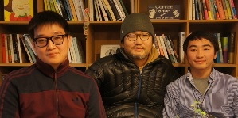
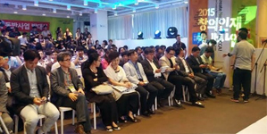
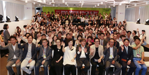

-
 '창의인재 동반사업' 창조경제 대표적인 모델 평가 '창의인재 동반사업' 창조경제 대표적인 모델 평가'춘희막이' 참여 멘티만 4년간 7명, 다들 자기길 찾아 [2015-10-21 | 아시아뉴스통신=송현수 기자] 지난해 독립영화로 역대 최대인 전국 470만 관객을 불러모았... 2015-10-30
-
김풍 `매력 넘치는 멘토!` 김풍 `매력 넘치는 멘토!`
[MBN] 2015-07-01
문화체육관광부(장관 김종덕)와 한국콘텐츠진흥원(KOCCA·원장 송성각)이 함께하는 콘텐츠 인재 양성 프로그램 ‘2015 콘텐츠 창의인재 동반사업’의... 2015-09-17 -
 “생계걱정 덜고 창작에 집중”…2015 콘텐츠 창의인재동반사업 발대식
“생계걱정 덜고 창작에 집중”…2015 콘텐츠 창의인재동반사업 발대식
[ebuzz] 2015-07-01
문화체육관광부와 한국콘텐츠진흥원이 ‘2015 콘텐츠 창의인재동반사업’ 발대식을 7월 1일 오전 서울 종로구 대학로 콘텐츠코리아... 2015-09-17 -
 한국콘텐츠진흥원‘창의인재동반사업’ 창작플랫폼 자리잡아 한국콘텐츠진흥원‘창의인재동반사업’ 창작플랫폼 자리잡아1일
한국콘텐츠진흥원‘창의인재동반사업’ 창작플랫폼 자리잡아 한국콘텐츠진흥원‘창의인재동반사업’ 창작플랫폼 자리잡아1일
발대식, 김수로, 송지나, 김풍, 노소영등 멘토 눈길[아시아뉴스통신] 2015-07-01 한국콘텐츠진흥원(원장 송성각)에서 지난 2011년부터 운영중인 ‘창의인재 동반사업’이 해가 갈수록 ... 2015-09-17 -
‘폐인가족’ 김풍-‘님아∼’ 진모영-‘한공주’ 이수진, ‘힐러’ 송지나-나비 노소영 관장 등 정상급 멘토 86명, 한콘진 창의인재 동반사업 참여 ‘폐인가족’ 김풍-‘님아∼’ 진모영-‘한공주’ 이수진, ‘힐러’ 송지나-나비 노소영 관장 등 정상급 멘토 86명, 한콘진 창의인재 동반사업 참여[톱스타뉴스] 2015-06-29？ 문화체육관광부(장관 김종덕)와 한국콘텐츠진흥원(KOCCA·원... 2015-09-17
-
2015 콘텐츠 창의인재 동반사업 발대식 개최
[머니위크] 2015.07.01
2015 콘텐츠 창의인재동반사업 발대식.
문화체육관광부(장관 김종덕)와 한국콘텐츠진흥원(KOCCA·원장 송성각)이 주최하는 '2015 콘텐츠 창의인재 동반사업'의 발대식이... 2015-09-14 -
 김풍·김수로·진모영, 문체부·한콘진 '콘텐츠 창의인재 동반사업' 멘토
[뉴시스] 2015-06-29
김풍, 웹툰 작가(사진=뉴시스 DB) 2015-06-29
이재훈 기자 = 웹툰 '폐인가족'의 작가 겸 예능 프로그램 '냉장고를 부탁해'에 출연 중인 셰프테이너 김풍, 영화배... 2015-09-11 -
콘텐츠진흥원 창의인재 멘토링 사업 "4년째 순항" 콘텐츠진흥원 창의인재 멘토링 사업 "4년째 순항"1일 대학로서 4기 발대식…배우 김수로·웹툰작가 김풍 등 멘토진 '풍성' [연합뉴스] 2015-07-01 (서울=연합뉴스) 김중배 기자 = 한국콘텐츠진흥원이 주관해 콘텐츠제작 신예인력 발굴과 ... 2015-09-09
-
노소영 관장 "애매한 건 딱 질색…가장 무서운 '멘토'될 듯" 노소영 관장 "애매한 건 딱 질색…가장 무서운 '멘토'될 듯"'2015 콘텐츠 창의인재 동반사업' 멘토로 처음 참가하는 노소영 '아트센터 나비'관장
[머니투데이] 2015-07-02
나긋한 목소리와 예의바른 태도를 갖췄... 2015-08-29 -
노소영 관장, 콘텐츠진흥원 ‘창의 멘토’ 참여
노소영 관장, 콘텐츠진흥원 ‘창의 멘토’ 참여
김수로·송지나 등 86명 함께 젊은 인재 맡아 ‘도제식 교육’
[문화일보] 2015-07-01
노소영 아트센터나비미술관장, 배우 김수로, 작가 송지나, 연출가 고선웅, ... 2015-08-29
- 처음 목록으로 이동
- 이전 목록으로 이동
- 1
- 2
- 다음 목록으로 이동
- 끝 목록으로 이동
'창의인재 동반사업' 창조경제 대표적인 모델 평가
작성일 : 2015-10-30 | 조회수 : 47
매체명 : 보도자료 명 | 게재일 : 2015-10-30
매체명 : 보도자료 명 | 게재일 : 2015-10-30
- 첨부파일
- 기사 이미지.jpg [0 byte]
'창의인재 동반사업' 창조경제 대표적인 모델 평가
'춘희막이' 참여 멘티만 4년간 7명, 다들 자기길 찾아
[2015-10-21 | 아시아뉴스통신=송현수 기자]
- 이전글
- [SBS] 유영석 PD 인터뷰
- 다음글
- [SBS] 유영석 PD 인터뷰